instruct_subset500 (05_instruct) · first 100 samples manually tagged · 34 good, 29 issues across 5 issue types, 37 not flagged
Instruction requires genuine reasoning; target is a correct, non-trivial answer.
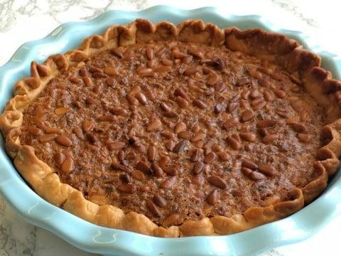
a1ae5b04bed82778548d5dff8e604759da5fc0bd814d60f458f25e2d8b71bdc6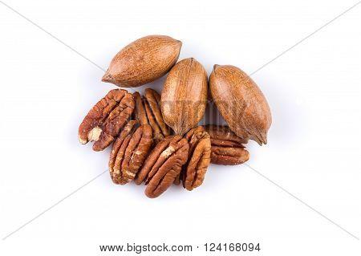
84d64a3b5e8778ceb78f1f1f6c10806e8a7a7f0212d7bfdd4a8391580d2b8622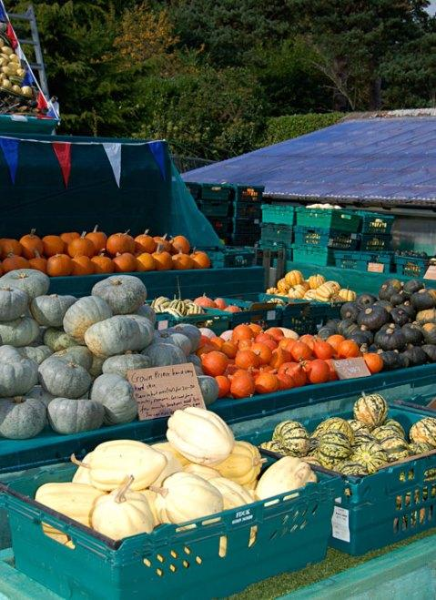
376c903219b32e9bdabce3e2eb360320b4a3b00fcce5acce2933b2044500f5c9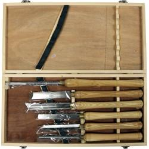
d02a8baa46fa166be98eafd169f91aa5943eaec056f84040589bbf1944b27f4e89239d14cc15525455a54fab0b21bc1aa6cd791ae12ca9daf330b1f4d71ebae5a5bd6a0e4e76d9c6e7e86edd2df1bc67ea831bf5ce61ee36d3fccf74185f66b6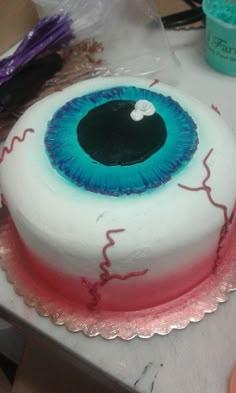
df352b4010d483ff8fed9a56640825803e501c7be28505c545f32f11b51ad9041a2976b264276fc61b1d99837b98e6c2683aa2af6cb61a61cb815092fe8b1d4c6b9e70b9bc3d356d3c2b1750d320866e8e001e388d530d89408b58506e1d191bfb129381a8bde5dc34b059421369524d6aeb583e4493b9cb9d37d2d303c31738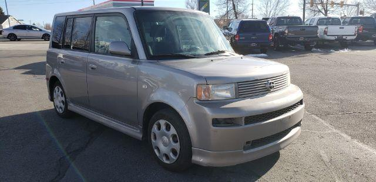
059ad64595fb021eede02ae6b1f9c48f7403409c756347705d5a88294853746df23b6b579faa53a794e94a82b5a9f903d667d5e59e1cf8f87fbac4db9afd23be133359c2fb78d892778407b8c35c9642c6e4622368a89520be1301a5052057b9d0dc5551738e79da4283f6a7f81486401c0632890194aa51dee2ce5b9877c4d0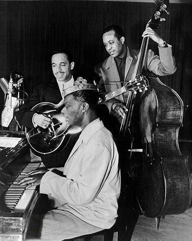
aa5823b559dbb01cb3b3dede5aa3c38f97386ddcf6a6c7d1bef7cd544b6f0890ad3d711f5d8ca8fed7bceb3467b9ad74b1d2efc2af292f5bcdb7a2bf9531ca2b3e4ad47f5c67e9fbfdbeb20d2d09fa80740a2db6694e33a53629fdd5ce6a7d2d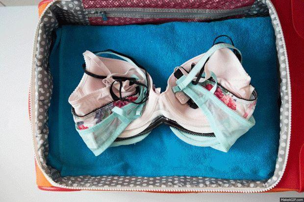
d8f6183d8fe8daa850d848d94290d713005e6f2d22e0ecbf2fcf669b568412f5eb381d9cc9848a79a98d279c0bdd56e2e69b97d96a4156178636061a29cd53b0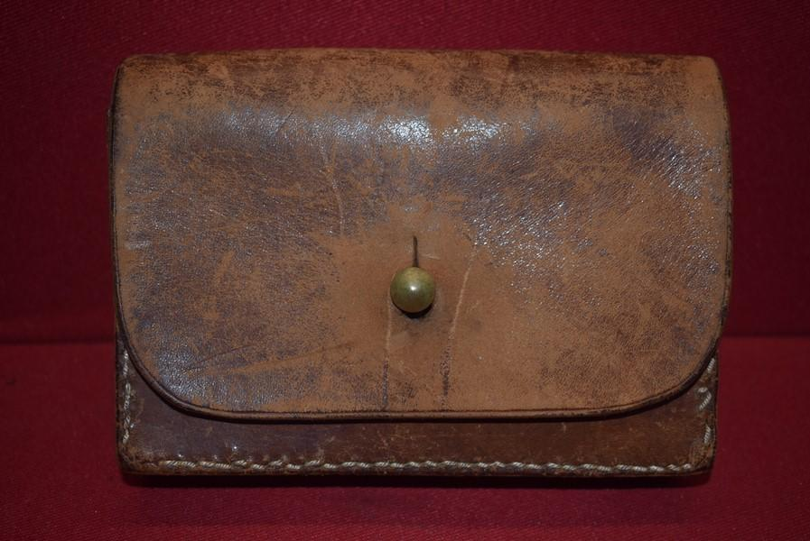
6fb7983582702516c00fb2cdd0319093bc5317ec8a23df333295f1db50465d6b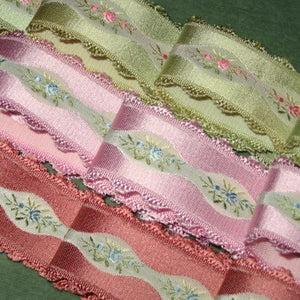
9a7403060ce18c0995495e27eb520636a4ca78c32a7bafb6480020a4bf63877aaccd1868e5d733b68c49d38d1ff133dbba11c2039fce146fd232b60c82fbe628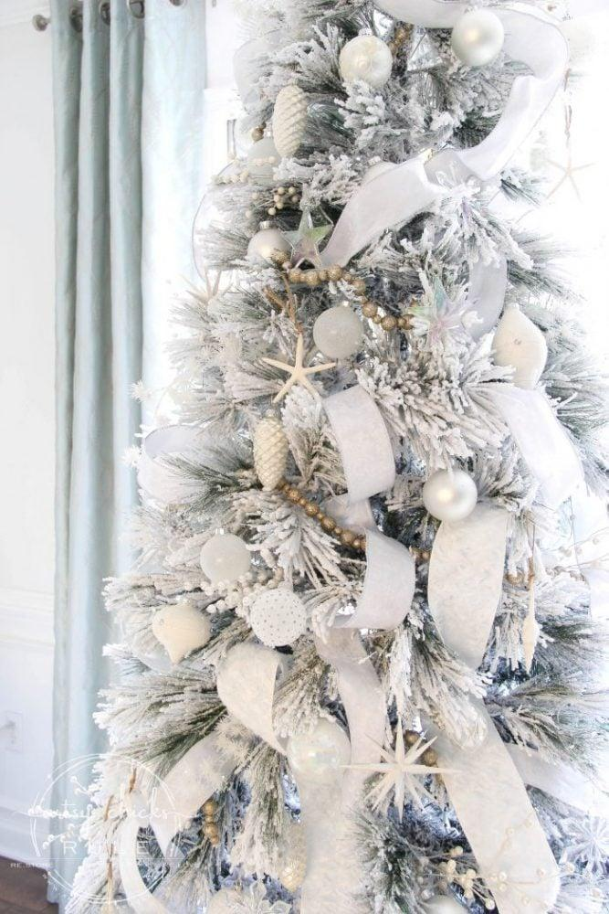
5f34220e71e764bf6ca31ae53332bc7f6554b0ffbfddeea9bead385488f1a0c6c37e9c96fa31fbddafffe517a29429b669ce1b22f6af3217b00671abbf196726af55feb2148c2675238c16568c32c9dc4b37caff651c98aa9f5effd63fc3f9a4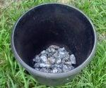
7a6fa8c0f2a5afa6896c978d5ea3546e705476408c5fbe8127a7c10d98525a22b94b7d3ba22f7651a422fd929e288f028d1cab573225c9d15b9cce698b23a8a9825c9714100451c15d50018c1f22f363dfab89edaa7836e856e1e54f2c6a7f10d9cb278fc8c50134115e82fd4b5389e5a2db1f5e7e10e5cce3d5b8c1a54eb60e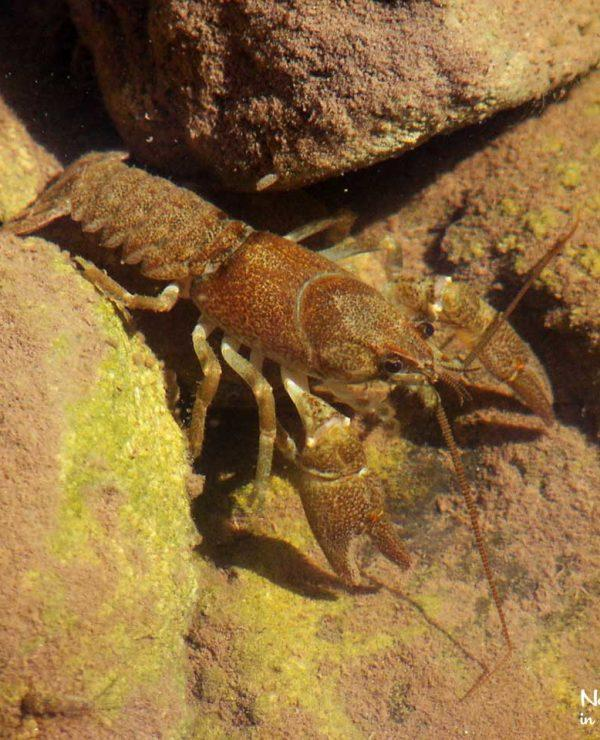
3ee0dc1746f24bb88c4926db006478b77e2e2934d4d95b54e91bcf83e978fa79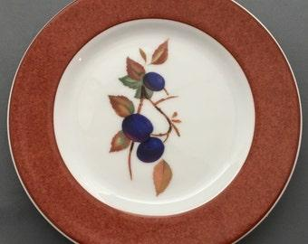
b98ccd89a39c1c1de89ef2e94e368596e3c13def9e650a34c2215895a76fcbf6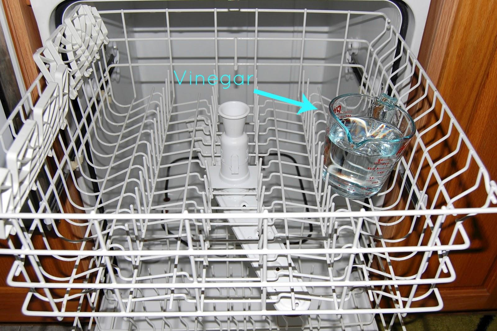
6fc62af33ef9dee8d4abd1b7638ce80fa68bf8191480f160f22119c4988247058a489147b7fb06745c6cf774d0e868afe0c1c842e2629bd873ded0024978adf5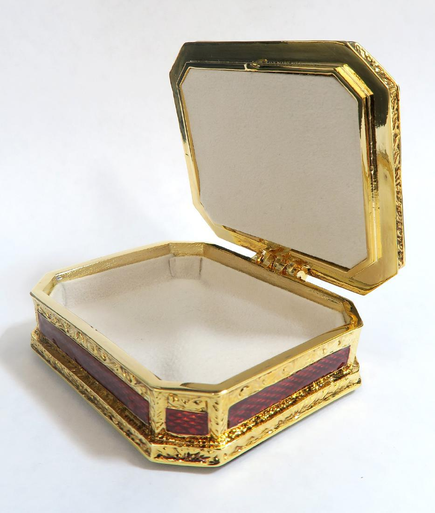
fda2d403ed6fb03eac5f4e75b07252431d55aa0be984060a86119d78e7a96463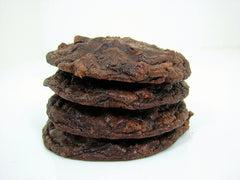
999b0004162f994e6f0635514546d55a7c8c0fbe4e1a70dfc0b4187a2995da36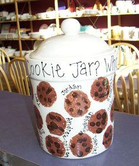
b559b90e18b93ff970c494f38fa3eaa20968a606455b2e3710fbfa912227a05f36b1300901f33318990af483e2c5be7a8b3bc47dee85df74f540457fc0f0983cd8c37b8eb74382bb80d5c04ded6da72c4f2ec11190d5c8c90fe44d3f2399c959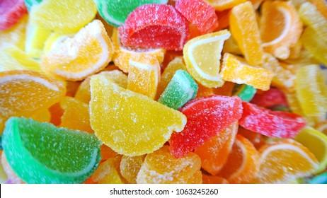
945d5a4e31fd58250622235b3e6d4302182b24cca4a29626dd8ac3703753cf59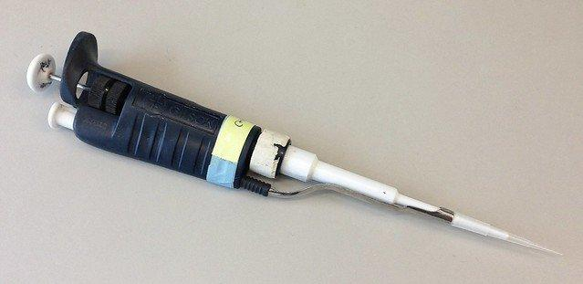
c2d30473231e43bef02181764f6c21f2bce2d68c9e1e0953033fb71b6bdff69058c016cdb9854235b21f569e1fa35a1197cc78234b8c06c0b66f3a80e6b86b8df7ca65fde6b5e6c2b14f15d8f370d7bc1b18ca21c9994b4412aae997d028bd8a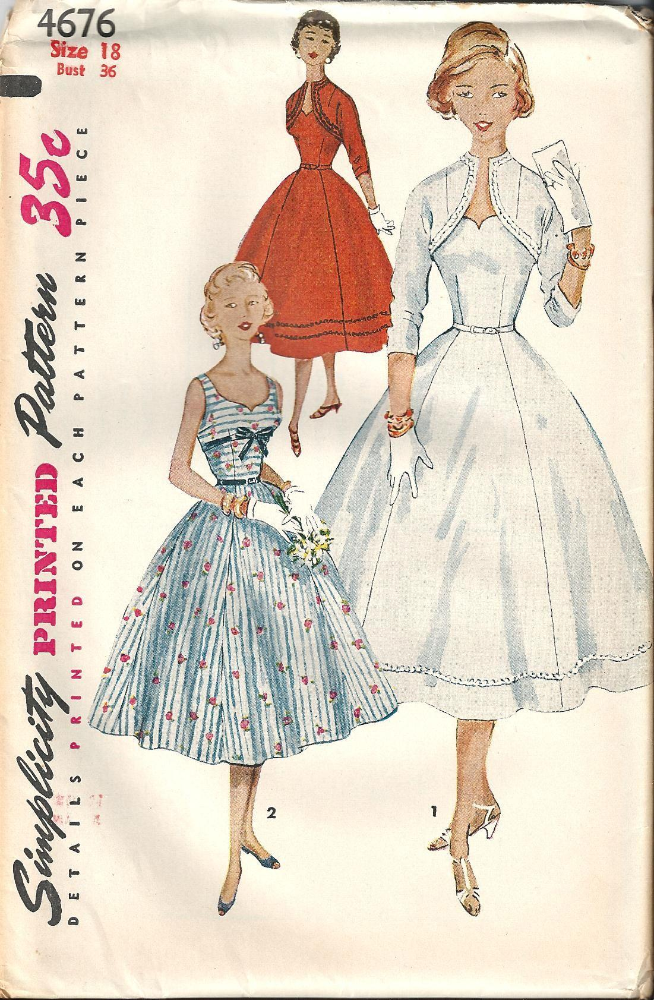
e30f39e6d989455b0789811a77092406c652740b3ea2d873d01c405a2017f360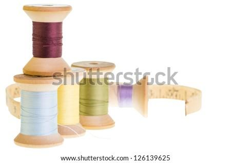
ae0769f0b8b59dadcbf32fa5c1b62ed9294e4e8eb0977a49cd3229d2ada63e6e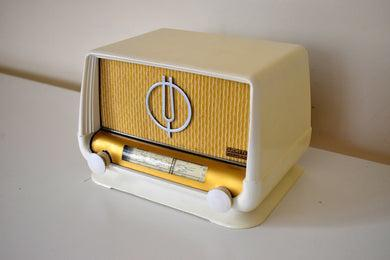
9132bb2fb5641190d5b2a4a742dc8a60429c6c5f4e334b03fbc561c79cafe2d0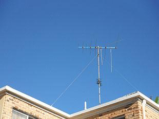
fe85ae2e6614e7c7d6d5b9e3677dc01937bac3d3485c5d733e1c8f3f24878a707cfd2b52a8f1e3d73d12dce21098eb432fec0e11d828c9d1031c5a667ebbe74f77b33ef889cb3c27e093a9038e9238fa8276b4b19c76e2db18e2e3b1ba1101d9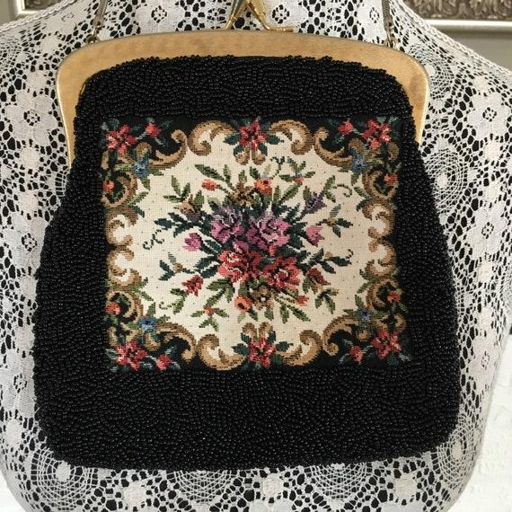
663b5cc12a829cc29b7db00c35d949d94e55a0c5ed027b87963e97a168bf77c9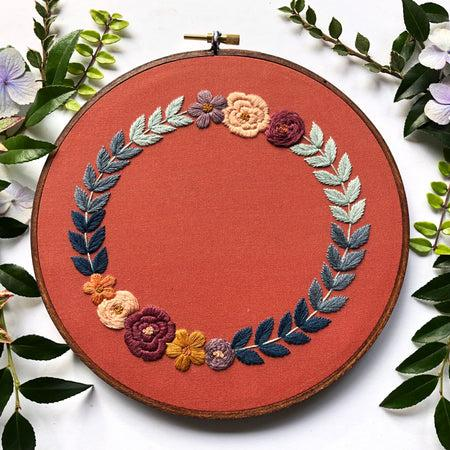
98f19100fcc311d76053129139c97f12fa701d635016d4af8be07f66218e3016b11b18d91388c88108b10bd0db7c95abfe73731d348fe97072318c0f1df5520f752a3f55558a99010f1f27dd886a23393ba7a58076c6c89dbdc06e0450c8a6532c8a8399458d0beb155a6393c8b3a17a74af6741cbb18caed859a3407c069ce1ae2eb1a861d2cdc068d5f28d1884a64f1bd1de8ef0c24d1e67491b96dda10463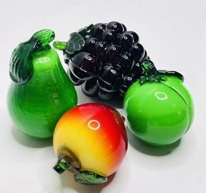
a8ff2a6936c1c7cf8c97f9ad28175bdacb7872ec3715bd127280e16a14128836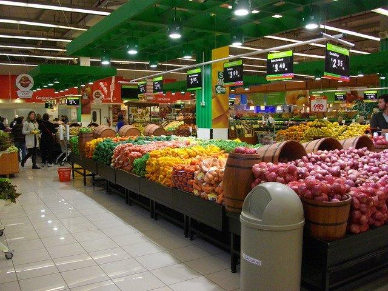
1f1a847a93c06bce85cc2c70d8064db8968bcf88202067f2063b3ffd9c8feb00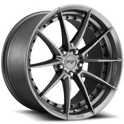
4526ee8e3a40e890c97bfecee51df3c608851f3382e43c03fb754462a3fd3a46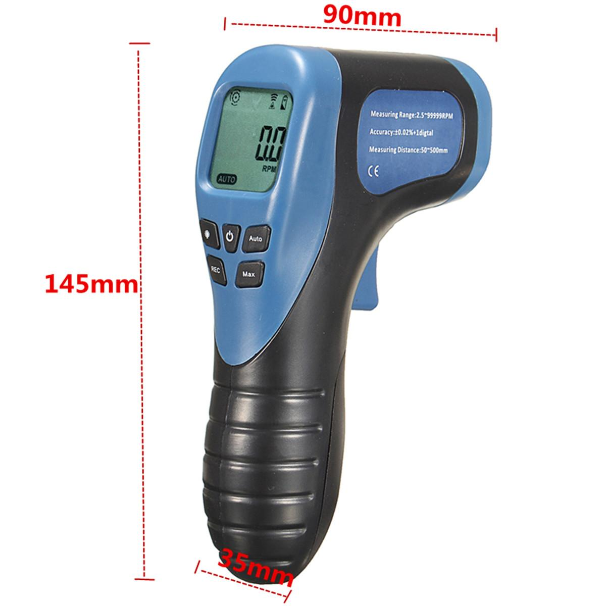
9d29d27b1a8d0f7a85312a064fd721ddb5cbd78cc1c160eb09660ef946921d88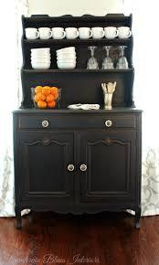
8d7e0d17379b1efffc4c55ddfe233296f3adab4b212e22ebc6590a7f42632a8c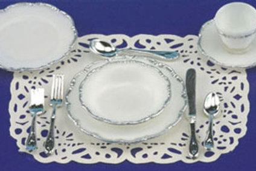
703dd8677008eb2ecaf97091f4589964b9aa1a95c4679fc0964736a2112e84acfe7f88dce0d1b3183cc614095cd4bf9ee3cd759292e12d089710a2c8190ea0bd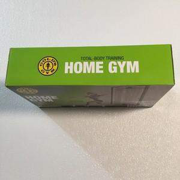
cf7a88f02c5226d207e150fc325010a90a0851c13ae9351390b4ae9e5d7d2343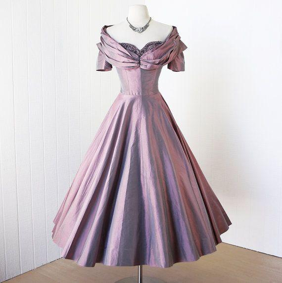
75567a2af376aee0d87b25a4b7965644dd83856e22190359eb291c6685b0329e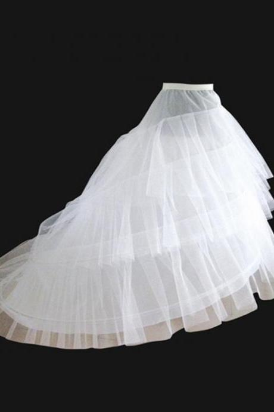
db383f5c3486f61c077732210bac4a1d42a87d920a73729284f3ce4a03fb689a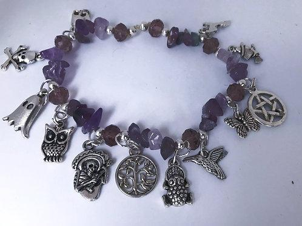
1fa4506a1366a2d1991ca2693ff4b659c8f4f6572a1df6aefeb7387a983d1575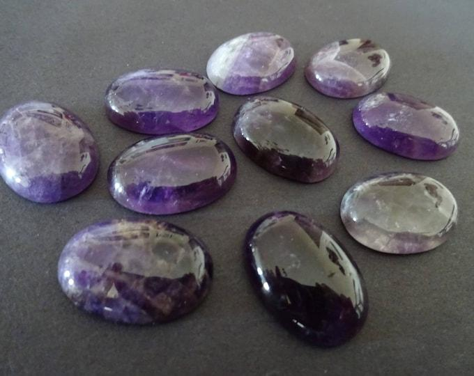
4b334bba327825eb0a1713da33f465bae46635140aee2b3bf69028fea727efcc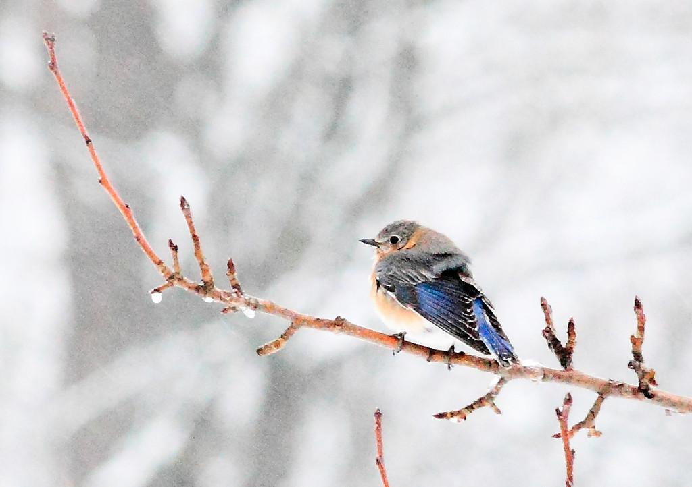
5c1e864492f8ec25c3d1202b9376437f38a437aa3fc61485061bec3f5c7d939f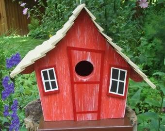
fe99994f3946745f7955b834509712a0d907b200dcc0b19efe07046fffa5b03cQuery subject can't be reliably identified, so the reasoning link is unverifiable.
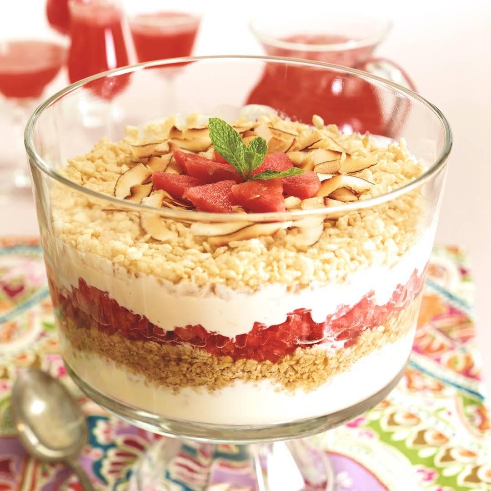
607a5904625d271b5b0d949a62f88ace0f219a8b0667d07377c39a177a5aaecb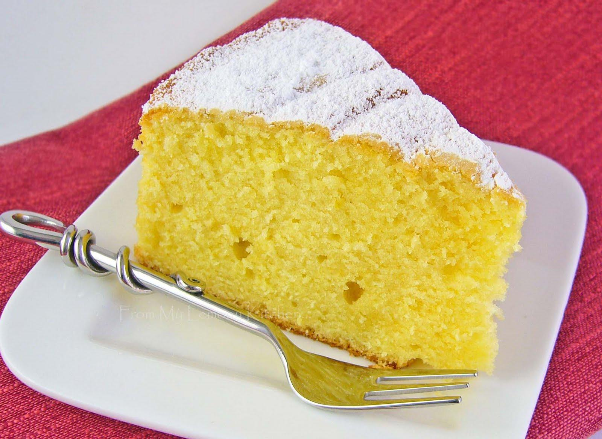
73be68cd483438b4c721d591a1e0ff7ca0c2ee619dd32311aafa782fcc2f6647084bf8370cbc49234151182746dfdaad48bb65edfc80a94fcc0b6705edcd1630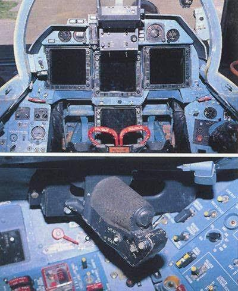
0cda438d32991c2befbe1e4491f358e2e9802d56a6ba5982cb25d59bc8f5854e24595ea504779591d28bcf5b9abcab5b7f7bc33909133d5d80286813000687d7a69c45ade47a2d2182d0e897e5bbf7eb0070b6fceb96566c1882c73e1169c1df8c57fb55ab83773a0be1866076eae825379497fc774f5ca4b1ea80b83e760542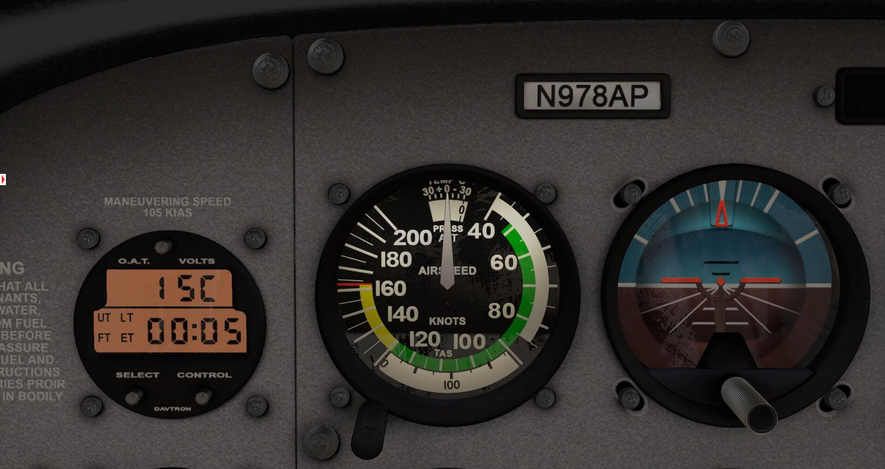
1ef61ae07688f259389fe70bc5b3b6fe7863824170701922b4076c85a56c445f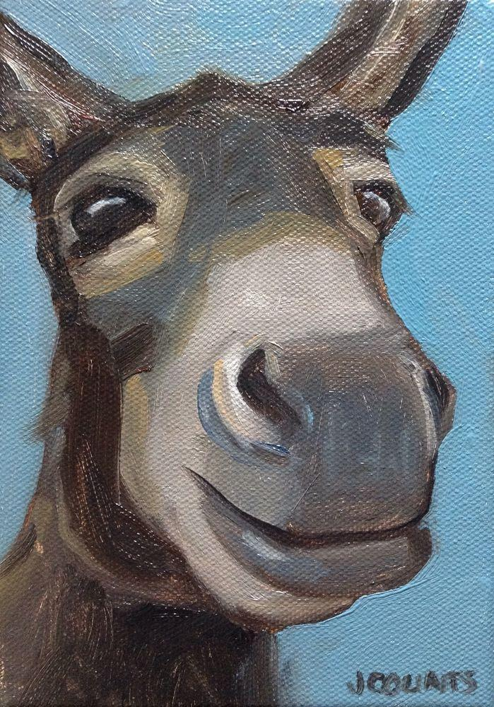
5d82459201097fcc44190f376434f4b8d02748dc4fe0046f3596a6a8fcbddd02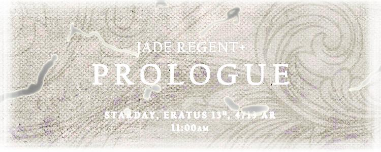
c31a9bcafb8c765c29fdc4728e3f76670ddf28b765267bcc025b03428e5bef68f6dcf5c3b2c1f5ae8a4eccc6d7b19e9e2da7bd5398a896e964be3d28be8f25b2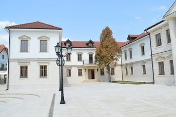
c5d4b774320ddc771ca96cc405d3648813454aa6f1e3fd027c46948d4155dc79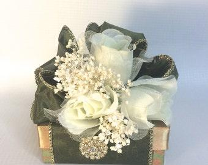
7a6eecde80458bf0aa1d73d78562dd3345b2312d1cde3f47becc5f66c6d66832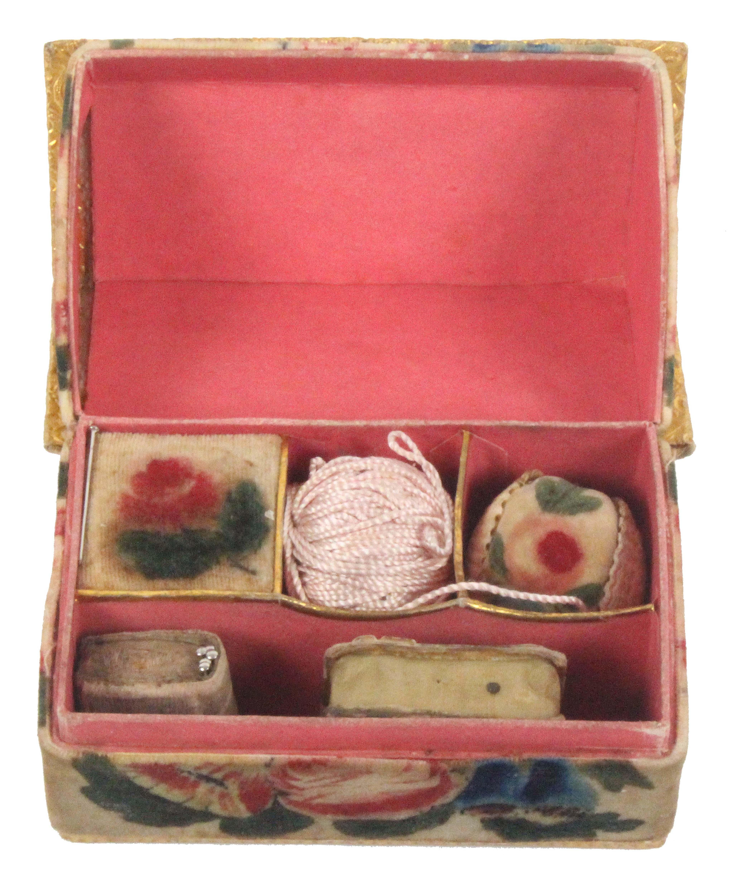
95ddae7013aa4f08371517c8d43fb510c59504540797d23665f3060b16f8fb10Query and target differ in scale / level of detail / texture in a way that breaks the pair.
259f1593dac886ce8e029d5f853c24ce7edfb522b6d331dc20fd34cdc454875b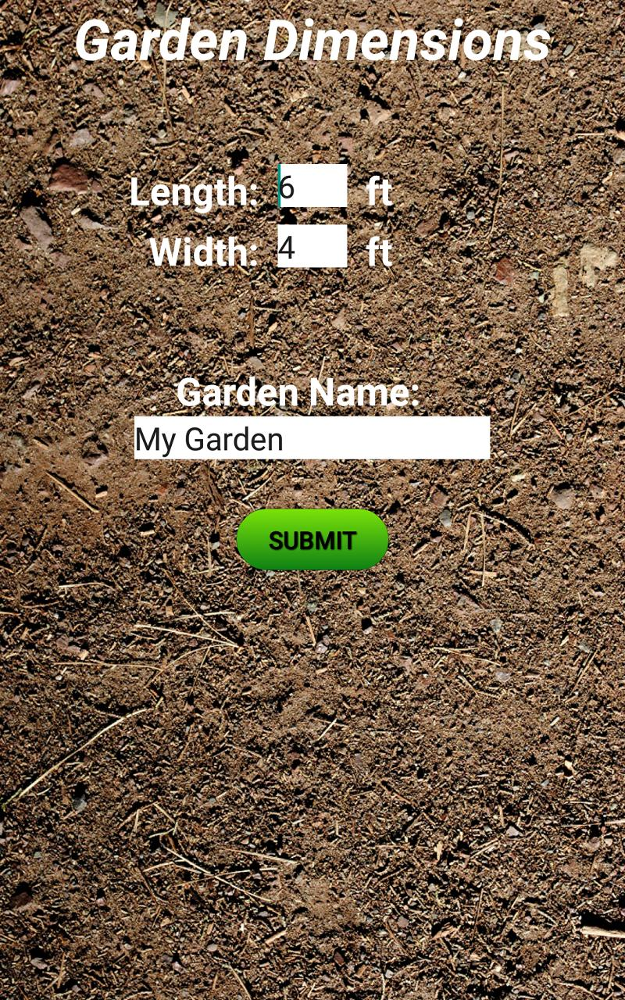
5d498a37b0b8e941f54a3ed78d8b4989c8d213e3996052ddb3585df007106787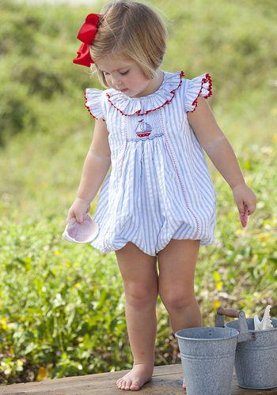
0636d73e3eaeafee1d2b04649e150934f94ff6a3ff157fd16261157e81d7034757a20049a2982067baee89562c4b0c0d867384cc9be1441293fa04f4a2ba0f7b024a4b5174a1e8f5aba162a3ecb3b34fc565dccb90d75bb2fc2a84df9e9e65cf4ab0d6372ba5666ea83f02a64daeff900cfc890ca37c5533bd4300193124b15dd9ff142c9a4287bea1e87e68003d093f2e91b4a2f3b9805c2cec09b1c13bb0ae7611aad00bd3c5f47de1f09b913af1901b0e91dd38fe701bef4015327ba1aae34d6f67b0a83b2d0c9244ce289dec55cea4c55b3f5fdd1236fc9a2a09b41407db0511f29c4480502f8f1f5200331835a616019c58243a4515448db64d7010130652be36a21fd5566080546b5fd8cbd09f400542fe35b41c22dcf3b6f42020a335d67726f1310a43c21680ca576dab20efaeeeeb97af1da561592f44dc4f425aad07850871413a9c7f9f418b9240b943e0374aded2cd36c326243f8a6aa0d134f39e6a46604ff38d7b9779c79c5ee0d354f105d679b0f5d7fbbcdb75a0c523b12340ca817402be50a85ae8845abae2e932daa94f429baf0d322edbf39f5dca60b8287503df5c2beebe91f7d88d6e9562a0481faa30239449cbee1cc8412e8764ddc590ae6260004b5dfe87fe5af896e038af7de3ceea1326b775e36a9d690ce841bcc252cbbe2b6b9362383ddcdce407676b0366b8b43daaa21c23e82f6cf9b48a8c1d7715ea8180f4e10bd300eadca7112ef31115fbade521d07266963d911b36b8ebc5a6c88406827661548f0d26b636e857d1ee6847f07d9fb1927ae93757dadaef41076ae2130b8e2ba6e0afff3b6d32b2651a36a48fe10acc34593fa61f378b9f82633b07489c075d5a5c8c237006de74d1d3b6398942a80c4cfe6dd056d7Instruction leaks the answer or can be solved from text alone without the query image.
19c6947b9cd0abca4a5fdab88847631762d29533c9c35f514fcb30e573edccf4454e73b04552c553deabe28426f39b8d99360ca72025554457ef93553af1c63ecd78c7f9c927aea8b9a307315a495dc3bb753403f04ca6b63f202a19a546e85d3a3261bbee3999b08839d55041bd8e4dbb3e94d279bff32ce56f9b667bb6b87505e536ebb97230c64632236ce5d2cda6f43c49c0a4e0b8954cbfc0a20454561c64feaa2a5ef8642470959cfb0978d9437b0d83c8402f1060b95294e3d7e424c048e4d156317c0898aa681995bd82437fb7b441af6d95b1aa89b997449864aef0bb76ca2d25d7a377c3ba6bd2e5e7f2db4ff94acbc1947f792052c6f5c2bc2f910c934b278717888204ba35ebfa86357e6df751ec7784676e4113c6f0b35d0307d3639ed3bc9683bd206de7cfe3c4210eeff53fe48009345437629cb301e30dd6261f9dbe769530802efec0702048e8486f8525cfceee2001665c9ec589107266691934d949a073f604f79a660e35572935a2145bbe244acc2ce64483aefcee53d0c45955a8d09c2ed44b95cea964399e6075f78c7047f5fd508477f4c9d7b605b933a6a0123a2294f24f6552674f86a4447e8744b5c7015630f4988ab9c60696Query and target are unrelated; no plausible reasoning connects them.
5b0f2599d4b41706df9a43ee036fb8f7738f29aa2c3010a1d210c500a35f61e8286f02071b546ee13a717fdc3d5571b75fd14db783b6b0ec160b2ffb61419ba95c0b8dfd36865dcec3cd35ea64d21aa8e10a55a2fcc2f84d50ba577288744413caf74d44c71b0ab639b7ea4e3013921c287b56fd4d723a5d367b7e44f8a5d6e7d950ae73f91c0c16af378d888513e466619bb4b8f1c1947ebaa2cf90caf25a71fc0cc2a5cb863b44a6662da525b647c83b6dd3972e620aaffa43074c522e8d6cQuery and target are near-duplicates / the same content repeated.
b9551387a685855e5bf7520239b48e71d7a7d025b2558e15952ec604e1c934025c15b66905a7a37840e3abf2950fe0b4ba6b43d274a2124c4e8b472948b8cac3